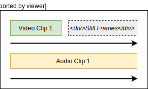
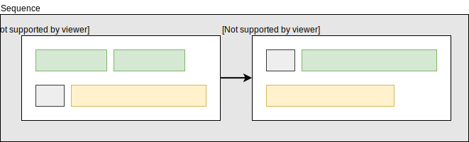
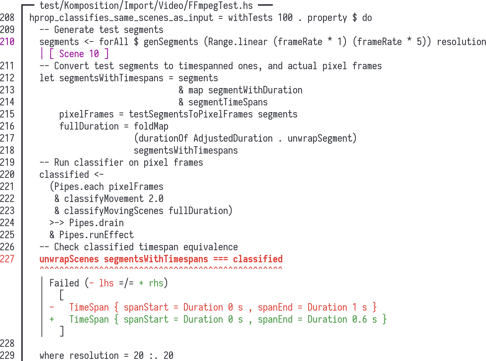

Property-Based Testing the Ugly Parts
Oskar Wickström
February 2019
About Me
- Live in Malmö, Sweden
- Work for Symbiont
- Blog at wickstrom.tech
- Maintain some open source projects
- Haskell at Work screencasts
- Spent the last year writing a screencast video editor
Introduction
Property-based testing
- Testing properties of your system
- Large set of inputs
- Static and dynamic languages
- QuickCheck
- Hypothesis
- test.check
- Hedgehog
Simple Examples
List reverse
\(\forall x . \mathit{reverse}(\mathit{reverse}(x)) \to x\)
Addition commutativity
\(\forall x\,y. (x+y) \to (y+x)\)
Sorting algorithms
\(\forall x . \mathit{mySuperSort}(x) \to \mathit{industryStandardSort}(x)\)
Hedgehog
- Random generated inputs
- Integrated shrinking
- Great error reporting
- Concurrent test execution
- Not using type classes(!)
List Reverse with Hedgehog
prop_reverse = property $ do
xs <- forAll $
Gen.list
(Range.linear 0 10)
(Gen.int Range.linearBounded)
reverse (reverse xs) === xs
List Sort with Hedgehog
prop_sort = property $ do
xs <- forAll $
Gen.list
(Range.linear 0 10)
(Gen.int Range.linearBounded)
mySuperSort xs === industryStandardSort xs
Failures

Rhetorical Question
How many of you write sort algorithms in your day job?
How do I use this in my job?
- What if you’re working with:
- Backends with databases and integrations?
- Frontends with GUIs and user input?
- Data pipelines and analytics?
- Hard to write properties
- Fewer examples
Property-Based Testing for the Busy Programmer
Testing the “Ugly” Parts
- Not everything will be small pure functions
- Complex interactions between larger modules
- Stateful
- Side-effects
Designing for Testability
- Regular “writing testable code” guidelines apply:
- Single responsibility
- Determinism (not necessarily pure!)
- No global side-effects
- Rich data types
- Low coupling between interface and implementation
Patterns for Properties
- “Choosing properties for property-based testing” by Scott Wlaschin
- “Different paths, same destination”
- “There and back again”
- “Some things never change”
- “The more things change, the more they stay the same”
- “Solve a smaller problem first”
- “Hard to prove, easy to verify”
- “The test oracle”
Today’s Agenda
- Motivating examples from Komposition
- Techniques not covered
- State-machine testing
- “Database of inputs”
Case Studies from Komposition
Komposition
|

|
Complex Features
- Most complex features in Komposition
- Focus and timeline transformations
- Video classification
- Rendering
- Application logic
- Spend effort on testing those
Case Studies
- Timeline Flattening
- Video Scene Classification
- Focus and Timeline Consistency
- Undo/Redo Symmetry
Hierarchical Timeline
Clips
Video Still Frames

Adding Gaps

Sequences

Timeline

Case Study 1: Timeline Flattening
Timeline Flattening
- Timeline is hierarchical
- Sequences
- Parallels
- Tracks
- Clips and gaps
- FFmpeg render knows only about two flat tracks
- Video track
- Audio track
Timeline Flattening (Graphical)
Testing Duration
hprop_flat_timeline_has_same_duration_as_hierarchical =
property $ do
t <- forAll $ Gen.timeline (Range.exponential 0 20) Gen.parallelWithClips
let Just flat = Render.flattenTimeline t
durationOf AdjustedDuration t === durationOf AdjustedDuration flatTesting Clip Occurence
hprop_flat_timeline_has_same_clips_as_hierarchical =
property $ do
t <- forAll $ Gen.timeline (Range.exponential 0 20) Gen.parallelWithClips
let Just flat = Render.flattenTimeline t
timelineVideoClips t === flatVideoClips flat
timelineAudioClips t === flatAudioClips flatFurther Improvements
- Missing properties
- How are video gaps padded with still frames?
- Same flat result regardless of grouping (split/join sequences, then flatten)
- Padding with frames from other parallels
- Frames are only picked from video clips within the parallel
- Should pick from any video clip within the timeline
- Write properties to guide my work
Case Study 2: Video Scene Classification
Video Scene Classification
- Komposition can automatically classify “scenes”
- Moving segment: at least M seconds of consecutive non-equal frames
- Still segment: at least S seconds of consecutive near-equal frames
- M and S are preconfigured thresholds of moving and still segment durations
Visualizing with Color Tinting

Testing Video Classification
- Generate high-level representation of expected output segments
- Convert output representation to actual pixel frames
- Moving frames: random color pixels
- Still frames: all pixels with same color
- Run the classifier on the pixel frames
- Test properties based on:
- the expected output representation
- the actual classified output
Two Properties of Video Classification
- Classified still segments must be at least S seconds long
- Exception: First and last segment may be shorter
- Classified moving segments must have correct timespans
- Comparing the generated expected output to the classified timespans
- This is just a week old
Testing Still Segment Lengths
hprop_classifies_still_segments_of_min_length = property $ do
-- Generate test segments
segments <- forAll $
genSegments (Range.linear 1 (frameRate * 2)) resolution
-- Convert test segments to actual pixel frames
let pixelFrames = testSegmentsToPixelFrames segments
...Testing Still Segment Lengths (cont.)
...
-- Run classifier on pixel frames
let counted = classifyMovement 1.0 (Pipes.each pixelFrames)
& Pipes.toList
& countSegments
-- Sanity check: same number of frames
countTestSegmentFrames segments === totalClassifiedFrames counted
-- Then ignore first and last segment, and verify all other segments
case dropFirstAndLast counted of
Just middle -> traverse_ (assertStillLengthAtLeast 1.0) middle
Nothing -> success
where
resolution = 10 :. 10Success!
> Hedgehog.check hprop_classifies_still_segments_of_min_length
✓ <interactive> passed 100 tests.Testing Moving Segment Timespans
hprop_classifies_same_scenes_as_input = property $ do
-- Generate test segments
segments <- forAll
genSegments (Range.linear (frameRate * 1) (frameRate * 5)) resolution
-- Convert test segments to timespanned ones, and actual pixel frames
let segmentsWithTimespans = segments
& map segmentWithDuration
& segmentTimeSpans
pixelFrames = testSegmentsToPixelFrames segments
fullDuration = foldMap
(durationOf AdjustedDuration . unwrapSegment)
segmentsWithTimespans
...Testing Moving Segment Timespans (cont.)
...
-- Run classifier on pixel frames
classified <-
(Pipes.each pixelFrames
& classifyMovement 1.0
& classifyMovingScenes fullDuration)
>-> Pipes.drain
& Pipes.runEffect
-- Check classified timespan equivalence
unwrapScenes segmentsWithTimespans === classified
where resolution = 10 :. 10Failure!

What Went Wrong?
- There were multiple bugs:
- The specificiation was wrong
- The generators and tests had errors
- The implementation had errors (since its inception)
- Next steps:
- Thought about the specification for a while
- Thought about how generators and tests should work, rewrote them
- Got minimal examples of failures, fixed the implementation
- Thousands of tests ran successfully
- Tried importing actual recorded video, had great results!
Case Study 3: Focus and Timeline Consistency
Focus and Timeline
- The focus is a data structure that “points” to a part of the timeline
- The timeline and focus must at all points be consistent
- User commands can:
- alter the timeline
- alter the focus
- Undo/redo complicates things
Testing Focus and Timeline Consistency
- Generate a random initial state
- Generate a random sequence user commands
- Run all commands until termination
- main control flow
- entering/exiting modes
- state
- event handling (stubbed)
- effects (stubbed)
- main control flow
- Assert that the focus and timeline are consistent
- Checking that “get the focused part” returns something
Focus and Timeline Property Test
hprop_focus_never_goes_invalid = property $ do
-- Generate the initial timeline and focus
timelineAndFocus <- forAllWith
showTimelineAndFocus
(Gen.timelineWithFocus (Range.linear 0 10) Gen.parallel)
-- And from those, the initial timeline mode state
initialState <- forAll (initializeState timelineAndFocus)
-- Generate a sequence of events (user commands)
events <- forAll $
Gen.list (Range.exponential 1 500) genFocusChangingEvents
...Focus and Timeline Property Test (cont.)
...
-- Run all the user commands (wrapped in events)
endState <- runTimelineStubbedWithExit (concat events) initialState
-- Check that the focus points to something in the timeline
assert . isJust $ atFocus
(endState ^. existingProject.project.timelineFocus)
(endState ^. existingProject.project.timeline.UndoRedo.current)Case Study 4: Undo/Redo Symmetry
Undo/Redo Symmetry
- Undo/Redo was previously implemented as stacks of previous/future states
- Consumed gigabytes of disk space and RAM for projects with many edits
- Rewrote the implementation to only store “invertible actions”
Testing Undo
- Generate an initial state
- Generate a sequence of undoable commands
- Run all commands
- Run undo command for each original command
- Assert that we end up at the initial state
Actions are Undoable
hprop_undo_actions_are_undoable = property $ do
-- Generate initial timeline and focus
timelineAndFocus <- forAllWith showTimelineAndFocus $
Gen.timelineWithFocus (Range.linear 0 10) Gen.parallel
-- Generate initial application state
initialState <- forAll (initializeState timelineAndFocus)
-- Generate a sequence of undoable/redoable commands
events <- forAll $
Gen.list (Range.exponential 1 100) genUndoableTimelineEvent
...Actions are Undoable (cont.)
...
-- We begin by running 'events' on the original state
beforeUndos <- runTimelineStubbedWithExit events initialState
-- Then we run as many undo commands as undoable commands
afterUndos <- runTimelineStubbedWithExit (undoEvent <$ events) beforeUndos
-- That should result in a timeline equal to the one we at the
-- beginning
timelineToTree (initialState ^. currentTimeline)
=== timelineToTree (afterUndos ^. currentTimeline)Testing Redo
- Generate an initial state
- Generate a sequence of undoable/redoable commands
- Run all commands
- Run undo and redo commands for each original command
- Assert that we end up at the state before running undos
Actions are Redoable
hprop_undo_actions_are_redoable = property $ do
-- Generate the initial timeline and focus
timelineAndFocus <- forAllWith showTimelineAndFocus $
Gen.timelineWithFocus (Range.linear 0 10) Gen.parallel
-- Generate the initial application state
initialState <- forAll (initializeState timelineAndFocus)
-- Generate a sequence of undoable/redoable commands
events <- forAll $
Gen.list (Range.exponential 1 100) genUndoableTimelineEventActions are Redoable (cont.)
-- We begin by running 'events' on the original state
beforeUndos <- runTimelineStubbedWithExit events initialState
-- Then we undo and redo all of them
afterRedos <-
runTimelineStubbedWithExit (undoEvent <$ events) beforeUndos
>>= runTimelineStubbedWithExit (redoEvent <$ events)
-- That should result in a timeline equal to the one we had before
-- starting the undos
timelineToTree (beforeUndos ^. currentTimeline)
=== timelineToTree (afterRedos ^. currentTimeline)Undo/Redo Test Summary
- These tests made the refactoring possible
- Founds many interim bugs
- Off-by-one index
- Inconsistent focus
- Non-invertible actions
- After the tests passed: ran the GUI, it worked
Wrapping Up
Summary
- Property-based testing helps you:
- run more test
- express properties of your system, rather than anecdotes
- shrink down failures to minimal examples
- refactor and evolve existing functionality
- write new functionality
- It’s most likely available for your language of choice
- Using them in Komposition:
- Made refactoring and evolving large parts of the system tractable and much more safe
- Found existing errors in my thinking, my tests, my implementation
- It’s been a joy
References
- What is Property Based Testing? by David R. MacIver
- Experiences with QuickCheck: Testing the Hard Stuff and Staying Sane by John Hughes
- “Choosing properties for property-based testing” by Scott Wlaschin
Questions?
Thank You!
- Komposition: owickstrom.github.io/komposition/
- Slides: owickstrom.github.io/property-based-testing-the-ugly-parts/
- Thanks to John Hughes for great feedback!
- Image credits: